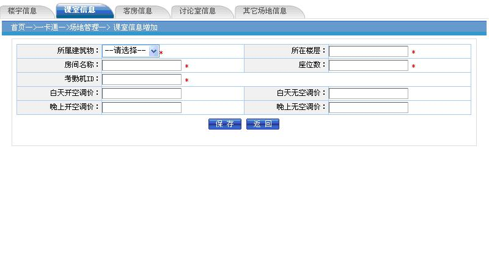
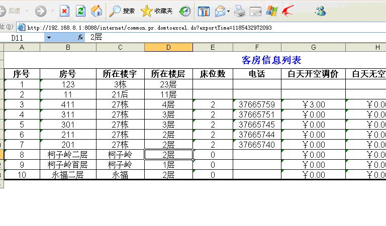
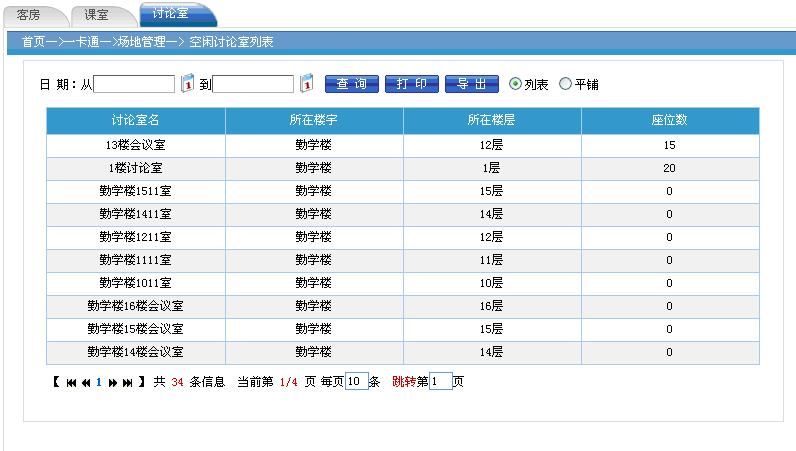

场地管理是指对课室、客房、讨论室、羽毛球场等设施的管理。包括基础数据管理、课室出租、客房出租和结帐管理。
点击“一卡通 à 场地管理 ”，进入到 场地信息 页面。
功能： 对课室基础信息进行维护。
操作： 点击“基础数据管理”菜单即可。
功能： 对楼宇信息进行维护。
操作： 点击“楼宇信息”菜单即可。
9.1.1.1• 查询
功能： 按楼宇名进行查询。
操作： 输入上面的查询条件，点击“查询”按钮即可。
功能： 新增楼宇信息。
操作： 点击“新增”按钮，弹出下面的新增页面。在对应的地方输入楼宇基本信息。楼宇名不能重复，按“保存”即可。
功能： 对已有楼宇信息进行修改。
操作： 选择要修改的行， 点击“修改”按钮，进入下面的修改页面，修改楼宇基本信息后，按“保存”即可。
功能： 删除已有的楼宇基本信息。
操作： 选择要删除的楼宇， 点击“删除”按钮，系统提示“是否真的要删除指定项目”，点击“确认”即删除。
功能： 对已有楼宇信息列表进行打印。
操作： 点击“打印“按钮，弹出下面的打印页面，可以进行打印、页面设置、预览操作。
功能： 将查询结果信息导出到 EXCEL 表格中 。
操作： 点击“导出“按钮，弹出下面的提示窗口，如选择”打开“直接 EXCEL 文件，选择“保存”则将 EXCEL 保存到本机上。
选择打开，则看到下边的导出的 EXCEL 文件，用户可以对该文件进行调整修改、打印。
功能： 对课室信息进行维护。
操作： 点击“课室信息”菜单即可。
有两种显示方式，列表 和 平铺。当点击平铺时以平铺方式显示
功能： 按课室名进行查询。
操作： 输入上面的查询条件，点击“查询”按钮即可。
功能： 新增课室信息。
操作： 点击“新增”按钮，弹出下面的新增页面。在对应的地方输入课室基本信息。课室名不能重复，按“保存”即可。

功能： 对已有课室信息进行修改。
操作： 选择要修改的行， 点击“修改”按钮，进入下面的修改页面，修改课室基本信息后，按“保存”即可。
功能： 删除已有的客房信息。
操作： 选择要删除的课室， 点击“删除”按钮，系统提示“是否真的要删除指定项目”，点击“确认”即删除。
功能： 对已有课室信息列表进行打印。
操作： 点击“打印“按钮，弹出下面的打印页面，可以进行打印、页面设置、预览操作。
功能： 将查询结果信息导出到 EXCEL 表格中 。
操作： 点击“导出“按钮，弹出下面的提示窗口，如选择”打开“直接 EXCEL 文件，选择“保存”则将 EXCEL 保存到本机上。
选择打开，则看到下边的导出的 EXCEL 文件，用户可以对该文件进行调整修改、打印。
功能： 对客房信息进行维护。
操作： 点击“客房信息”菜单即可。
有两种显示方式，列表 和 平铺。当点击平铺时以平铺方式显示
在平铺页面对应的客房上双击鼠标可以修改客房信息。
功能： 按客房名进行查询。
操作： 输入上面的查询条件，点击“查询”按钮即可。
功能： 新增客房信息。
操作： 点击“新增”按钮，弹出下面的新增页面。在对应的地方输入客房基本信息。客房名不能重复，按“保存”即可。
功能： 对已有客房信息进行修改。
操作： 选择要修改的行， 点击“修改”按钮，进入下面的修改页面，修改客房基本信息后，按“保存”即可。
功能： 删除已有的客房信息。
操作： 选择要删除的客房， 点击“删除”按钮，系统提示“是否真的要删除指定项目”，点击“确认”即删除。
功能： 对已有客房信息列表进行打印。
操作： 点击“打印“按钮，弹出下面的打印页面，可以进行打印、页面设置、预览操作。
功能： 将查询结果信息导出到 EXCEL 表格中 。
操作： 点击“导出“按钮，弹出下面的提示窗口，如选择”打开“直接 EXCEL 文件，选择“保存”则将 EXCEL 保存到本机上。
选择打开，则看到下边的导出的 EXCEL 文件，用户可以对该文件进行调整修改、打印。

功能： 对讨论室信息进行维护。
操作： 点击“讨论室信息”菜单即可。
 有两种显示方式，列表 和 平铺。当点击平铺时以平铺方式显示
有两种显示方式，列表 和 平铺。当点击平铺时以平铺方式显示
在平铺页面对应的讨论室上双击鼠标可以修改讨论室信息。
功能： 按讨论室名进行查询。
操作： 输入上面的查询条件，点击“查询”按钮即可。
功能： 新增讨论室信息。
操作： 点击“新增”按钮，弹出下面的新增页面。在对应的地方输入讨论室基本信息。讨论室名不能重复，按“保存”即可。
功能： 对已有讨论室信息进行修改。
操作： 选择要修改的行， 点击“修改”按钮，进入下面的修改页面，修改讨论室基本信息后，按“保存”即可。
功能： 删除已有的讨论室信息。
操作： 选择要删除的讨论室， 点击“删除”按钮，系统提示“是否真的要删除指定项目”，点击“确认”即删除。
功能： 对已有讨论室信息列表进行打印。
操作： 点击“打印“按钮，弹出下面的打印页面，可以进行打印、页面设置、预览操作。
功能： 将查询结果信息导出到 EXCEL 表格中 。
操作： 点击“导出“按钮，弹出下面的提示窗口，如选择”打开“直接 EXCEL 文件，选择“保存”则将 EXCEL 保存到本机上。
选择打开，则看到下边的导出的 EXCEL 文件，用户可以对该文件进行调整修改、打印。
功能： 对其它场地信息进行维护。
操作： 点击“其它场地信息”菜单即可。
有两种显示方式，列表 和 平铺。当点击平铺时以平铺方式显示
在平铺页面对应的其它场地上双击鼠标可以修改其它场地信息。
功能： 按其它场地名进行查询。
操作： 输入上面的查询条件，点击“查询”按钮即可。
功能： 新增其它场地信息。
操作： 点击“新增”按钮，弹出下面的新增页面。在对应的地方输入其它场地基本信息。其它场地名不能重复，按“保存”即可。
功能： 对已有其它场地信息进行修改。
操作： 选择要修改的行， 点击“修改”按钮，进入下面的修改页面，修改其它场地基本信息后，按“保存”即可。
功能： 删除已有的其它场地信息。
操作： 选择要删除的其它场地， 点击“删除”按钮，系统提示“是否真的要删除指定项目”，点击“确认”即删除。
功能： 对已有其它场地信息列表进行打印。
操作： 点击“打印“按钮，弹出下面的打印页面，可以进行打印、页面设置、预览操作。
功能： 将查询结果信息导出到 EXCEL 表格中 。
操作： 点击“导出“按钮，弹出下面的提示窗口，如选择”打开“直接 EXCEL 文件，选择“保存”则将 EXCEL 保存到本机上。
选择打开，则看到下边的导出的 EXCEL 文件，用户可以对该文件进行调整修改、打印。
功能： 课室主要供校内上课使用，但在空闲情况下，也可以对外出租。
对已经预定出租的课室，如果有校内使用需求，应以校内使用优先，取消预定。
操作： 点击“课室出租”菜单进入课室出租页面。
1• 用鼠标悬浮在（上，下，晚）字上可以出现该课室的相关使用信息。
2• 用鼠标悬浮在上栏课室名字上可以出现该课室的信息。
3• 点击上栏的课室，在下栏可以显示当月的使用情况。
4• 点击下栏的时间，在上栏可以出现所选时间的课室占用情况。
功能： 对空闲的课室进行预定。
操作： 在上栏选择要预定的课室，在下栏选择对应的时间段（上、下、晚），注意只能选择当前日期之后的日期。然后按“课室预定”按钮。弹出下面页面
填入对应的信息保存即可。
功能： 对已预定的课室取消预定。
操作： 在上栏选择已预定的课室，在下栏选择要取消的时间段（上、下、晚），注意只能选择已预定的时间（背景色为黄色）。然后按“取消预定”按钮。
功能： 对已预定的课室进行结帐。
操作： 在上栏选择已预定的课室，在下栏选择要预定时间段（上、下、晚，背景为黄色），注意只能选择一个。然后按“预定结帐”按钮。则会自动查询出该客户所有预定的课室。
填入相关信息，点击“保存”按钮即可。
功能： 对已预定的课室进行查询。可以用使用单位，用途，预定受理人，结帐受理人，联系人作为关键字进行查询。
操作： 点击“预定信息查询”按钮即可。
功能： 客房主要供校内学员住宿，但在空闲情况下，也可以对外出租。
对已经出租的客房，如果有校内使用需求，应以校内使用优先，取消预定。
操作： 点击“客房使用查询”菜单进入客房使用情况查询页面。
1• 用鼠标悬浮在上栏客房名字上可以出现该客房的信息。
2• 点击上栏的客房，在下栏可以显示当月的使用情况。
3• 点击下栏的时间，在上栏可以出现所选时间的客房占用情况。
功能： 对空闲的客房进行预定。
操作： 在上栏选择要预定的客房。然后按“订房”按钮。弹出下面页面
填入对应的信息保存即可。
功能： 对已预定的客房进行结帐。
操作： 在上栏选择已预定的客房，然后按“退房”按钮。
填入对应的信息保存即可。
功能： 交接班管理 是对前台服务员交换班情况进行记录。
操作： 点击“ 交接班管理 ”菜单即可。
功能： 按时间、登记人进行组合查询
操作： 输入上面的查询条件，点击“查询”按钮即可。
功能： 新增交接班。
操作： 点击“新增”按钮，弹出下面的新增页面。在对应的地方输入交接班信息，按“保存”即可。
功能： 对已有交接班记录进行修改。
操作： 选择要修改的行， 点击“修改”按钮，进入下面的修改页面，修改 交接班相关信息 后，按“保存”即可。
功能： 对已有交接班记录进行查看。
操作： 选择要查看的行， 点击“查看”按钮，进入下面的查看页面，或双击要查看的行。
功能： 删除已有的交接班记录。
操作： 选择要删除的交接班记录， 点击“删除”按钮，系统提示“是否真的要删除指定项目”，点击“确认”即删除。
功能： 对已有交接班列表进行打印。
操作： 点击“打印“按钮，弹出下面的打印页面，可以进行打印、页面设置、预览操作。
功能： 将查询结果信息导出到 EXCEL 表格中 。
操作： 点击“导出“按钮，弹出下面的提示窗口，如选择”打开“直接 EXCEL 文件，选择“保存”则将 EXCEL 保存到本机上。
选择打开，则看到下边的导出的 EXCEL 文件，用户可以对该文件进行调整修改、打印。
功能： 空闲场地汇总用于查询所有空闲的场地，包括课室和客房的空闲信息。
操作： 点击“空闲场地汇总”菜单即可。
功能： 对空闲客房信息进行汇总。
操作： 点击“客房”菜单即可。输入日期可以查询这段时间内没被使用的客房。
功能： 对空闲课室信息进行汇总。
操作： 点击“课室”菜单即可。输入日期可以查询这段时间内没被使用的课室。
功能： 对空闲讨论室信息进行汇总。
操作： 点击“讨论室”菜单即可。输入日期可以查询这段时间内没被使用的讨论室。

功能： 包括查询总台收支明细和收支汇总。
操作： 点击“总台收支汇总”按钮出现总台收支明细页面。

点击“汇总”按钮则可汇总选择时间段内总台收支汇总。